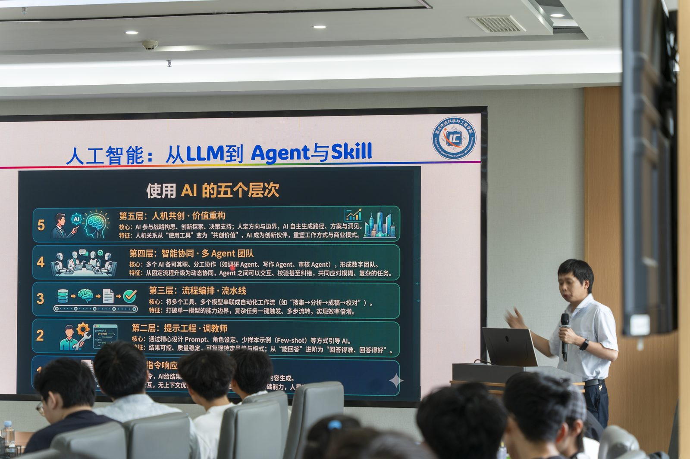
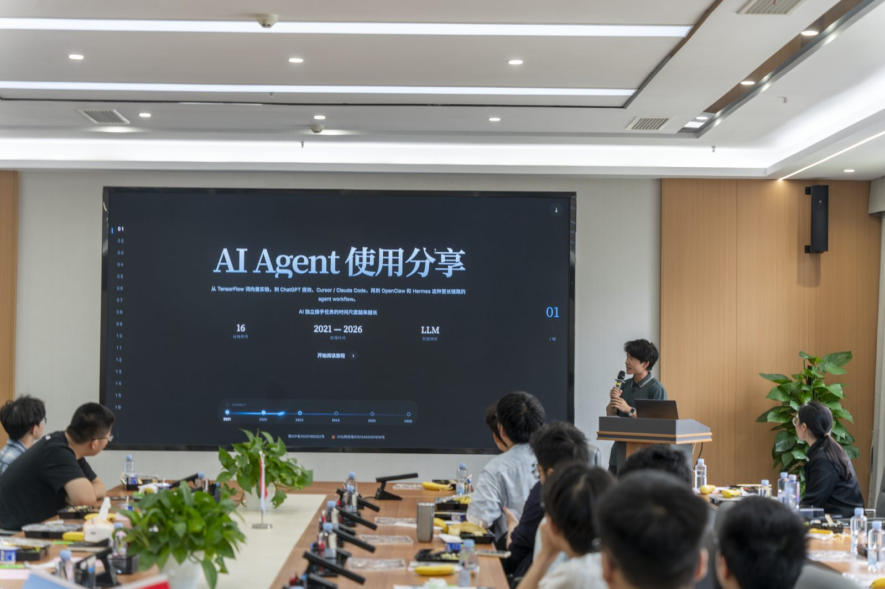
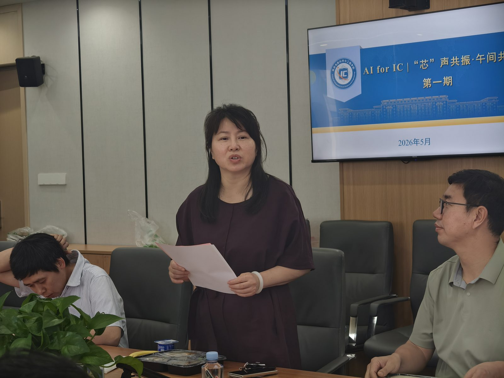
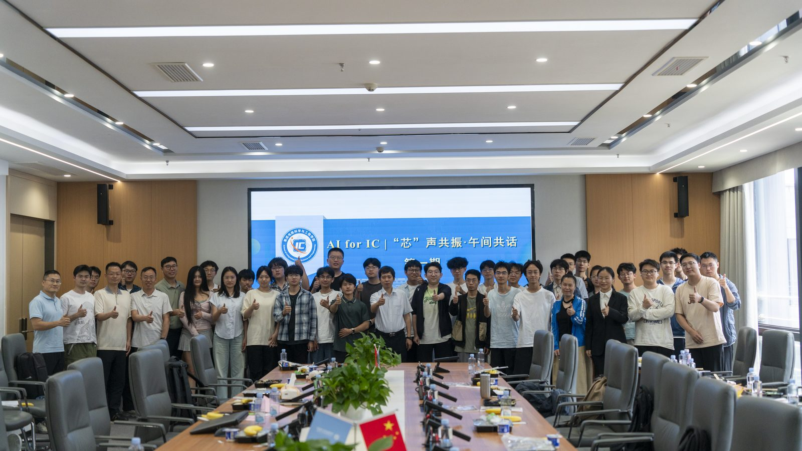

SALON / VOL. 01
第一期芯沙龙 · 圆满举行
已结束
活动概况
2026 年 5 月 26 日中午，电子科技大学集成电路科学与工程学院在成电国际创新中心 B511 举办首期「AI 芯沙龙」活动（活动主题：AI for IC ·「芯」声共振 · 午间共话 第一期）， 并同步成立 AI 芯动力工作室。
本次活动聚焦人工智能在集成电路领域的交叉应用，以朋辈为引、以对话为内核， 搭建开放共享、师生共话、灵感碰撞的交流平台。学院党委书记李雪梅、党委副书记于淼、 孔谋夫教授、李虞峰教授等嘉宾出席，40 余名学生参与交流。
前沿分享：技术与思想的「芯」碰撞
孔谋夫教授 ·《人工智能：从 LLM 到 Agent 与 Skill 的实践》
孔谋夫教授以大语言模型辅助生成设计文档为切入点，深入解析了三个层次的落地路径：
- Agent 自主调用工具 —— 让模型不再只是「回答问题」，而是能规划并执行多步任务
- 探索设计空间 —— 把参数搜索、方案权衡这类重复劳动交给智能体
- 以 Skill 为导向的模块化实践 —— 把可复用的设计能力沉淀成技能库，在集成电路各方向落地
他指出的判断是：在 AI 辅助集成电路设计领域，**传统单一模型正加速向具备规划与执行能力的 智能体（Agent）演进**。这种演进不仅提升了芯片设计自动化水平，更催生了 可复用设计技能库这一关键新范式。
孔教授勉励学子紧抓这一机遇，夯实基础、敢于实践，为「中国芯」自主创新贡献青年力量。
向钧升（硕士研究生）· 学生代表分享
向钧升从朋辈视角分享了他使用 AI Agent 的实战心得。他结合芯片设计中的参数优化等具体场景， 演示了智能体如何为科研提速，并真诚分享了自己在技术变革中的成长与思考。
这份分享贴近研究生科研与具体场景，引发了在场同学的强烈共鸣。
自由碰撞：多元视角激荡研究灵感
自由讨论环节气氛热烈。李雪梅书记、于淼副书记、孔谋夫教授、李虞峰教授等嘉宾 与在场学生围绕 「AI 赋能 IC 的技术路径」、「产教融合与复合能力培养」 展开深入互动。
同学们就以下问题与嘉宾交流：
- AI 模型的泛化能力，能否迁移到芯片设计这类高精度场景
- 异构计算与 IC 设计如何结合
- 产业界对复合型人才的真实需求是什么
领导寄语：共筑「中国芯」人才蓄水池与创新生态
活动尾声，于淼副书记作总结发言。他指出，AI 正深刻改变集成电路的设计方法学与产业生态， 芯动力工作室举办的「AI for IC」品牌活动，正是面向国家战略需求、主动回应产业变革的有力举措。
他强调，学院将持续构建前沿学术与产业实践深度融合的育人生态， 着力培养兼具 IC 设计功底与 AI 算法能力的拔尖创新人才。
后摩尔时代，AI + IC 是最具活力的创新赛道之一。 希望大家勇立潮头、交叉融合，在服务国家「强芯报国」战略中实现人生价值。
合影留念：「芯」火传承再启程
活动最后，与会师生共同合影留念。首期 AI 芯沙龙在轻松务实、思想激荡的氛围中圆满落幕。
AI 芯动力工作室将持续聚焦集成电路与人工智能的前沿交叉领域，常态化推进 「师生共话、朋辈引航」，为学院人才培养与学术创新注入源源不断的「芯」动能。
关键信息一览
| 项目 | 内容 |
|---|---|
| 时间 | 2026 年 5 月 26 日 中午 |
| 活动主题 | AI for IC ·「芯」声共振 · 午间共话 第一期 |
| 地点 | 成电国际创新中心 B511 |
| 主办 | 集成电路科学与工程学院 |
| 出席嘉宾 | 李雪梅（党委书记）、于淼（党委副书记）、孔谋夫教授、李虞峰教授 |
| 主讲 | 孔谋夫教授《人工智能：从 LLM 到 Agent 与 Skill 的实践》 |
| 学生分享 | 向钧升（硕士研究生） |
| 参与人数 | 40 余名学生 |
| 同期事项 | AI 芯动力工作室成立 |
来源
本文依据学院新闻稿整理。现场照片见本页末「活动现场」。
来源：集成电路学院 一审一校：李佳妍 二审二校：贺梦凡、董江林 三审三校：于淼
嘉宾与主讲
- 主讲
- 孔谋夫 · 教授 · 集成电路科学与工程学院
- 学生分享
- 向钧升 · 硕士研究生 · 集成电路科学与工程学院
议题与关键词
- 01人工智能：从 LLM 到 Agent 与 Skill 的实践
- 02AI Agent 在芯片设计参数优化中的实战
- 03AI 赋能 IC 的技术路径
- 04产教融合与复合能力培养
信息来源：人工录入（该条目已锁定，自动采集不会覆盖）
活动现场





图片来源：集成电路学院新闻稿（本站已对原图压缩处理）